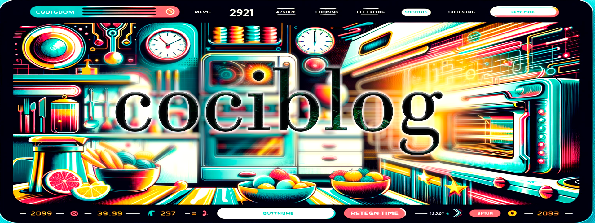
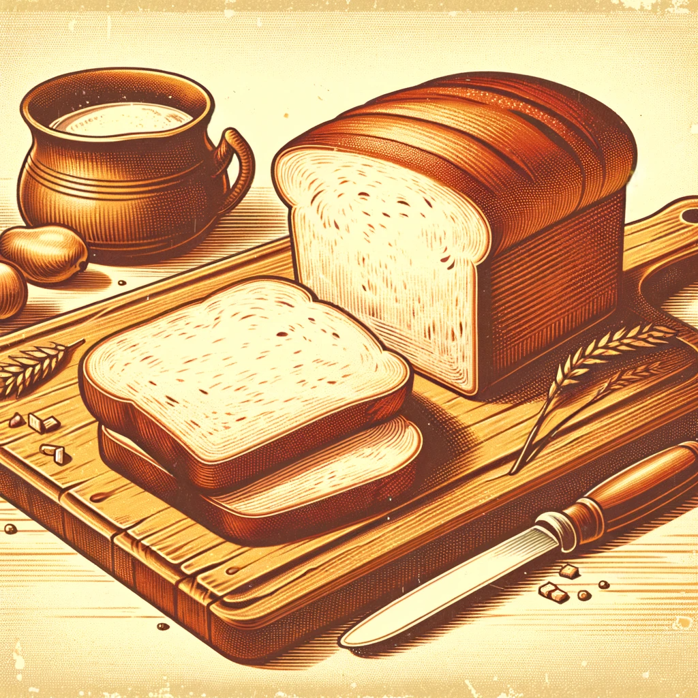
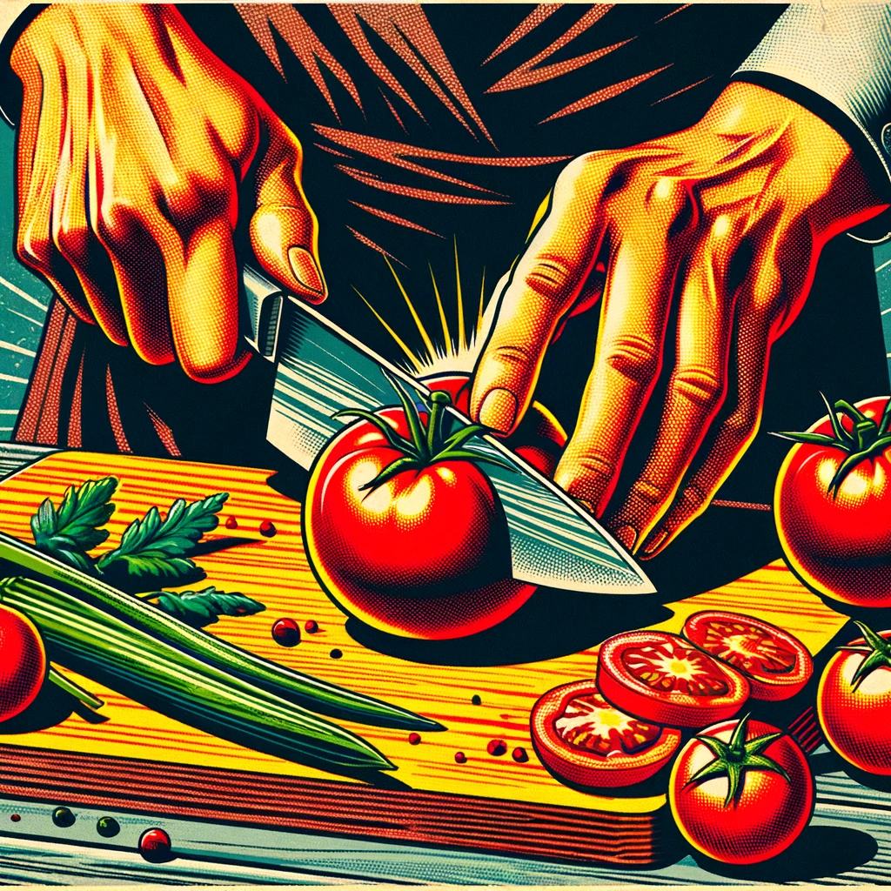
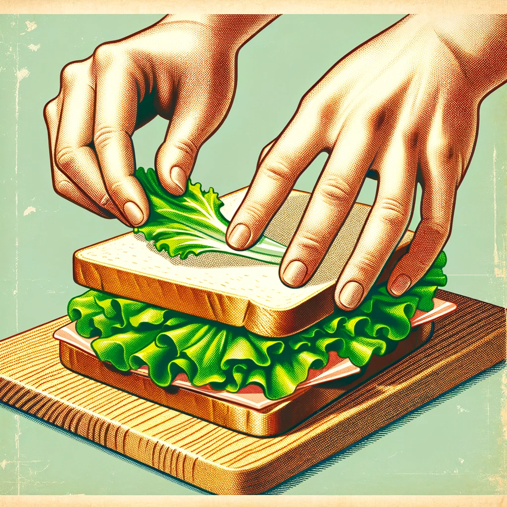
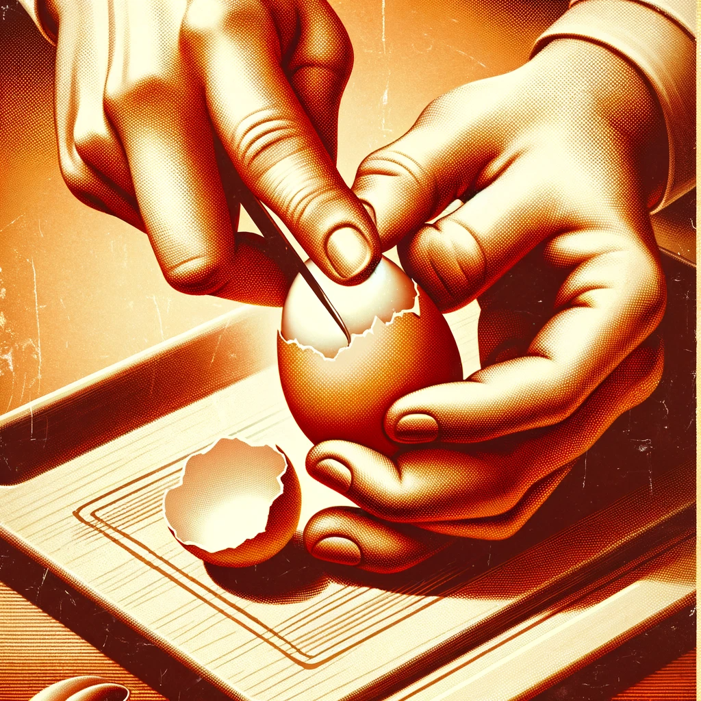
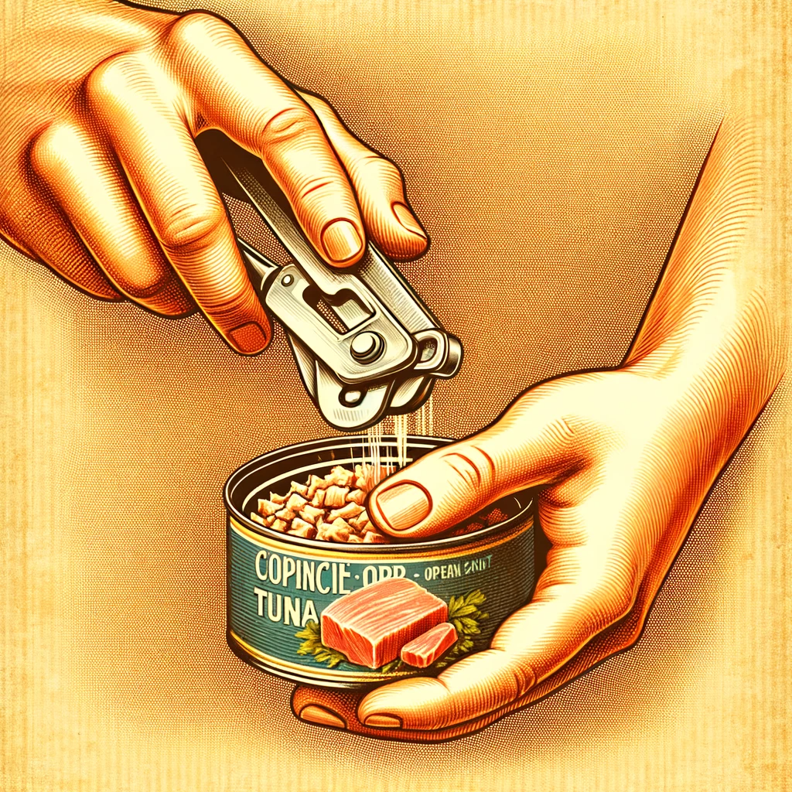

Sándwich Vegetal

- Pan
- 2 rebanadas de pan integral

- Tomate
- 1 tomate maduro

- Lechuga
- Unas hojas de lechuga

- Huevo
- 1 huevo cocido

- Atún
- 100 gramos de atún en conserva
Instrucciones Detalladas para el Sándwich Vegetal
-
Preparar los ingredientes
-
Tostar el pan
-
Colocar las rebanadas de pan en el tostador.
-
Ajustar el nivel de tostado deseado.
-
Cortar el tomate
-
Seleccionar un tomate fresco.
-
Cortar en rodajas finas.
-
Montar el sándwich
-
Colocar una base de lechuga sobre una rebanada de pan.
-
Añadir las rodajas de tomate encima de la lechuga.
© 2023 Blog de Cocina Futurista Retro